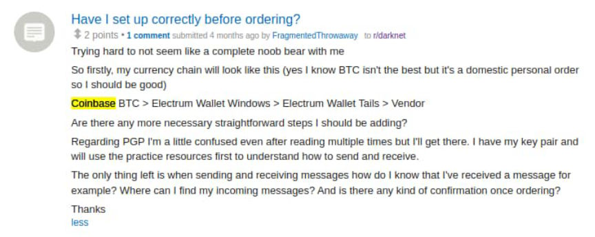
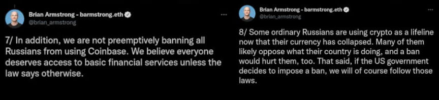
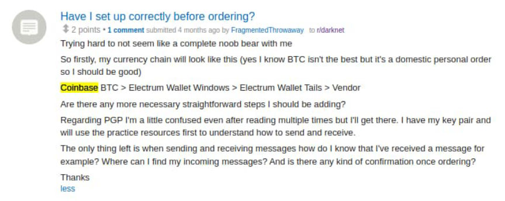
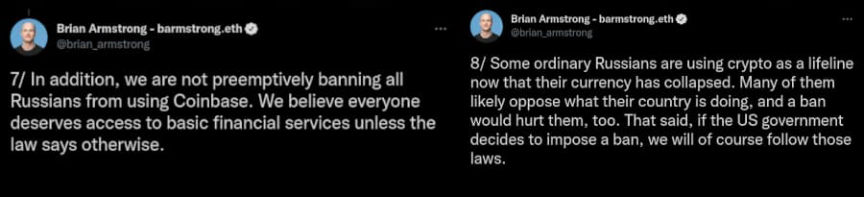

Coinbase Explains Why Criminals Should Avoid Coinbase
~4 min read | Published on 2022-03-08, tagged Cryptocurrency, Exchange using 776 words.
Coinbase explained why people should avoid using a centralized exchange in a blog post about banning Russian addresses.
Every reader of this site is aware of the cryptocurrency exchange Coinbase. Dread users know not to send funds from Coinbase directly to a marketplace. But many first-time users of illicit onion services believe that buying Bitcoin on Coinbase and sending it to a darkweb market is standard practice. Depending on how many people send Coinbase-purchased Bitcoin to a marketplace, this practice might be the norm. It obviously should not be.

Banning Russian Addresses
Coinbase recently published a blog post about enforcing sanctions on users in various countries. Unlike Uphold, Coinbase claims to be banning sanctioned individuals instead of an entire nation. Coinbase CEO Brian Armstrong has opposed calls from outraged Twitter users to restrict the accounts of all Russian Coinbase users. People should not expect Coinbase or other legitimate companies operating in the United States to ignore sanctions. Like it or not, that is just the reality of the situation. Such an expectation is akin to expecting an email service to tell law enforcement “no” when the feds show up with a subpoena for a user’s email address. But these companies are under no legal obligation to ban an entire country. Companies taking action against their Russian customers are just signaling and allowing an emotional mob to dictate their decisions.

The blog post blurred the lines between accounts held by regular Russian users and those used by sanctioned Russian oligarchs.
Today, Coinbase blocks over 25,000 addresses related to [i]Russian individuals or entities[/em] we believe to be engaging in illicit activity, many of which we have identified through our own proactive investigations.
My personal opinion is that not all 25,000 addresses are associated with sanctioned Russians. Coinbase claimed to have “[i]identified[/em]” most of these addresses before Russia invaded the Ukraine. “Once we identified these addresses, we shared them with the government to further support sanctions enforcement,” Paul Grewal, Coinbase Chief Legal Officer, wrote. Even Coinbase seems to be admitting that the blocked addresses belong to users who are not sanctioned.
Coinbase: Why Not to Use Coinbase
Coinbase, probably in a proactive defense of its existence, explained why digital assets enhanced the ability to detect sanction evasion. The explanations provided in the blog post apply to the illicit use of Coinbase or cryptocurrency in general. A possible exception is Monero (and perhaps other privacy coins).
Public. Public blockchains offer unprecedented visibility into the details of transactions, including information about the date and time of each transaction, the type of virtual asset transacted, the amount, the wallet addresses involved, and the unique transaction identifier. Suspicious transaction activity can be traced without needing to gather information from multiple financial institutions. These advantages for investigation and enforcement simply do not exist with cash transactions or transactions across multiple countries. Traceable. When applied to public blockchain data, analytics tools offer law enforcement additional capabilities. In many cases, law enforcement can trace the transaction history of a wallet from the very first transaction, follow transactions in real time, and group transactions according to risk level based on interactions with other wallets. Other techniques can help authorities to follow transactions between chains or through intermediaries. For example, Coinbase’s proactive on-chain analysis identified more than 16,000 addresses possibly associated with Iranian exchanges, many of which had not yet been identified by others. We used this analysis to strengthen our compliance systems and inform law enforcement in order to enhance industry-wide awareness. Permanent. Once recorded on the blockchain, transactions remain immutable. No one (not crypto companies, not governments, not even bad actors) can destroy, alter, or withhold information to evade detection.
There you have it. Why not to use Coinbase in the company’s words.
I am still skeptical about what the rest of their blog post means, though. Coinbase appears to be claiming that the 25,000 blocked addresses of Russian users are not associated with sanctioned individuals. Grewal throws an “or” in-between “Russian individuals” and “entities […] engaged in illicit activity.” Word games? I do not know.
Nobody should do anything illegal anyway. But they certainly should not use Coinbase to do illegal things. I suppose the issues with Coinbase are not relevent to people who are using it for lawful purposes who do not care about linking their identity to their transactions or having their funds arbitrarily frozen. But nobody should store funds in a wallet outside of their control. I think they are the PayPal of the crypto world.
Also, the Secret Service pays Coinbase for blockchain analysis software.
Every reader of this site is aware of the cryptocurrency exchange Coinbase. Dread users know not to send funds from Coinbase directly to a marketplace. But many first-time users of illicit onion services believe that buying Bitcoin on Coinbase and sending it to a darkweb market is standard practice. Depending on how many people send Coinbase-purchased Bitcoin to a marketplace, this practice might be the norm. It obviously should not be.

Coinbase BTC > Electrum Wallet Windows > Electrum Wallet Tails > Vendor. Laundering 101.
Banning Russian Addresses
Coinbase recently published a blog post about enforcing sanctions on users in various countries. Unlike Uphold, Coinbase claims to be banning sanctioned individuals instead of an entire nation. Coinbase CEO Brian Armstrong has opposed calls from outraged Twitter users to restrict the accounts of all Russian Coinbase users. People should not expect Coinbase or other legitimate companies operating in the United States to ignore sanctions. Like it or not, that is just the reality of the situation. Such an expectation is akin to expecting an email service to tell law enforcement “no” when the feds show up with a subpoena for a user’s email address. But these companies are under no legal obligation to ban an entire country. Companies taking action against their Russian customers are just signaling and allowing an emotional mob to dictate their decisions.

His opposition to the banning of Russians is pretty weak. He will not be holding the line.
The blog post blurred the lines between accounts held by regular Russian users and those used by sanctioned Russian oligarchs.
Today, Coinbase blocks over 25,000 addresses related to [i]Russian individuals or entities[/em] we believe to be engaging in illicit activity, many of which we have identified through our own proactive investigations.
My personal opinion is that not all 25,000 addresses are associated with sanctioned Russians. Coinbase claimed to have “[i]identified[/em]” most of these addresses before Russia invaded the Ukraine. “Once we identified these addresses, we shared them with the government to further support sanctions enforcement,” Paul Grewal, Coinbase Chief Legal Officer, wrote. Even Coinbase seems to be admitting that the blocked addresses belong to users who are not sanctioned.
Coinbase: Why Not to Use Coinbase
Coinbase, probably in a proactive defense of its existence, explained why digital assets enhanced the ability to detect sanction evasion. The explanations provided in the blog post apply to the illicit use of Coinbase or cryptocurrency in general. A possible exception is Monero (and perhaps other privacy coins).
There you have it. Why not to use Coinbase in the company’s words.
I am still skeptical about what the rest of their blog post means, though. Coinbase appears to be claiming that the 25,000 blocked addresses of Russian users are not associated with sanctioned individuals. Grewal throws an “or” in-between “Russian individuals” and “entities […] engaged in illicit activity.” Word games? I do not know.
Nobody should do anything illegal anyway. But they certainly should not use Coinbase to do illegal things. I suppose the issues with Coinbase are not relevent to people who are using it for lawful purposes who do not care about linking their identity to their transactions or having their funds arbitrarily frozen. But nobody should store funds in a wallet outside of their control. I think they are the PayPal of the crypto world.
Also, the Secret Service pays Coinbase for blockchain analysis software.